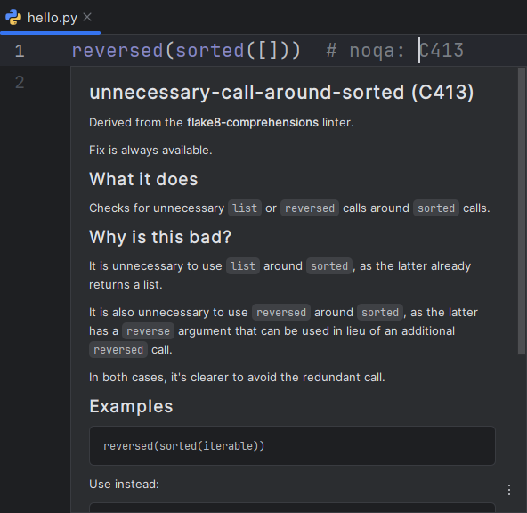
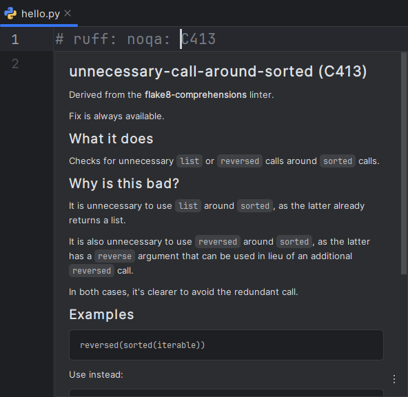

Documentation
On hover or Quick Documentation (Ctrl + Q), RyeCharm will show documentation popups for the currently selected symbol if it is a recognized one.
Rule selectors#
Rule documentation popups are shown for rule codes
in # noqa comments of both line and file-level
as well as the following TOML settings:
- (
lint)extend-fixable - (
lint)extend-ignore - (
lint)extend-per-file-ignores.* - (
lint)extend-safe-fixes - (
lint)extend-select - (
lint)extend-unfixable - (
lint)extend-unsafe-fixes - (
lint)fixable - (
lint)ignore - (
lint)per-file-ignores.* - (
lint)select - (
lint)unfixable
This is equivalent to running ruff rule ... with the rule code as argument.



TOML setting keys#
Configuration option documentation popups are shown for
keys of the [tool.ruff] table of pyproject.toml (or a subtable thereof)
and keys in ruff.toml/.ruff.toml.
This is equivalent to running ruff config ...
with the key's name as argument.